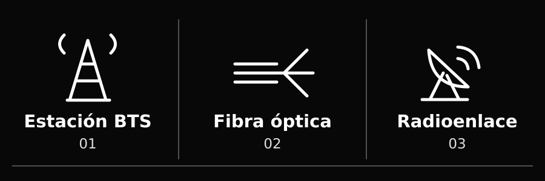

Contratos y renovaciones
Apoyo con el seguimiento de vencimientos y con la recopilación de documentos para renovaciones. También coordino la entrega de actas o autorizaciones cuando son necesarias para el acceso o el paso de infraestructura.
Experiencia laboral · SH International
Combino salidas a campo con gestiones de oficina en proyectos vinculados a Bitel en Junín y Huancavelica.
Una visita a una estación puede requerir acceso, materiales y coordinación con el equipo. Al regresar, queda otra parte del trabajo: ordenar las evidencias, registrar el avance y hacer seguimiento a los trámites pendientes.
Trabajo en campo
Gestión de oficina
Apoyo con el seguimiento de vencimientos y con la recopilación de documentos para renovaciones. También coordino la entrega de actas o autorizaciones cuando son necesarias para el acceso o el paso de infraestructura.
Organizo los sustentos de pagos y gastos de operación, como recibos, facturas y actas. Reviso qué documentos están completos y cuáles faltan para continuar el trámite.
Coordino requerimientos para las visitas y doy seguimiento a la entrega de materiales y equipos. Así puedo identificar qué está disponible y qué podría retrasar una salida.
Apoyo en la gestión documental de permisos y autorizaciones. Cuando una intervención requiere coordinaciones con propietarios o comunidades, hago seguimiento a las respuestas y a los documentos pendientes.
Infraestructura de red

Una estación base conecta los equipos móviles con la red. Si el reporte es de mantenimiento, me sirve separar la revisión de energía, el estado del equipo y las observaciones que dejó el personal de campo.
La fibra transporta datos mediante luz. Al ordenar un reporte de fibra conviene identificar el tramo revisado, el resultado que informó el equipo y si quedó alguna intervención pendiente.
Un radioenlace comunica dos puntos mediante señales de radio. Para hacer seguimiento, distingo los dos extremos del enlace y dejo claro si la revisión quedó concluida o falta una validación.
Ejemplos
Estos ejemplos ilustran cómo conecto lo que se observa en campo con la documentación de oficina, sin identificar instalaciones ni divulgar datos internos.